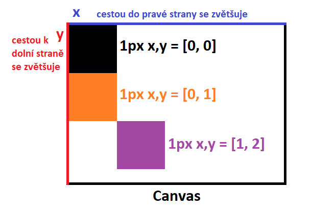
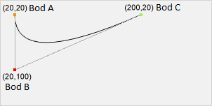

<canvas>
Slouží pro vytvoření grafického plátna
Na toto plátno se maluje pomocí různých scriptů
Editor
<!DOCTYPE html>
<html lang="en">
<head>
<meta charset="UTF-8">
<meta name="viewport" content="width=device-width, initial-scale=1.0">
<title>Document</title>
</head>
<body>
<canvas id="canvas"></canvas>
<script>
/**
* Bezny postup pro praci s canvas elementem
* 1. Propojime si HTML element s JavaScriptem
* 2. Ziskame si pro canvas graficky kontext
* 3. Nastavime sirku a vysku canvasu / vytvorime funkci, ktera se nam o to bude starat
* 4. Pres graficky kontext zacneme vykreslovani
* 5. Kresleni zacina naplnenim barvou. Styl naplneni se deli na fill (barva obsahu tvaru) a stroke (barva obvodu tvaru)
* 6. Nasleduje funkce pro vykresleni
*/
// odkazujeme na canvas v HTML
const canvas = document.getElementById('canvas');
// ziskavame graficky kontext z naseho platna (interface, ktery poskytuje 2d renderovani v canvas elementu - soucasti Canvas API)
const ctx = canvas.getContext('2d');
// vlastnosti width - sirka, height - vyska | vraceji sirku a vysku naseho canvasu | v nasem pripade prenastavujeme sirku a vysku canvasu na sirku a vysku okna
canvas.width = window.innerWidth;
canvas.height = 1080;
//canvas.height = window.innerHeight;
// vlastnost fillStyle - barva obsahu | nekolik zpusobu zapisu - slovne, hex, rgb...
ctx.fillStyle = 'green';
ctx.fillStyle = '#FFAA00';
ctx.fillStyle = "rgb(252, 45, 36)";
ctx.fillStyle = 'rgba(255, 165, 0, 1)';
// funkce fillRect() vykresli obsah obdelniku (souradniceX v px, souradniceY v px, sirka v px, vyska v px)
ctx.fillRect(0, 0, canvas.width, canvas.height);
ctx.fillStyle = "rgb(52, 245, 36)";
ctx.fillRect(50, 50, 100, 100);
// vlastnost strokeStyle - nastavi barvu okraje | zase stejne zpusoby zapisu barvy jako u fillStyle
ctx.strokeStyle = "black";
// funkce strokeRect() vykresli okraj obdelniku (souradniceX v px, souradniceY v px, sirka v px, vyska v px)
ctx.strokeRect(200, 200, 100, 100);
// funkce clearRect() vygumuje z platna danou oblast (souradniceX v px, souradniceY v px, sirka v px, vyska v px)
ctx.clearRect(75, 75, 100, 100);
ctx.fillStyle = "black";
/**
* Dalsi dulezitou soucasti jsou cesty - cesta je skupina bodu propojena nekolika carami.
* Tyto cary mohou nabyvat ruznych tvaru ci krivek s ruznymi rozmery
* Tyto cestou mohou byt uzavrene, ale i nemusi
*
* Postup pro vytvoreni cesty:
* 1. Zavolame funkci beginPath() - otevreme nasi cestu
* 2. Provedeme vykreslovaci operace
*/
/**
* Pohyb stetcem
*/
// otevre cestu
ctx.beginPath();
// posune stetec na souradnice x, y
ctx.moveTo(200, 100);
// ze souradnic 200, 100 se udela cara stetcem az do souradnic 300, 175
ctx.lineTo(300, 175);
// z 300, 175 se udela cara stetcem az do 300, 25
ctx.lineTo(300, 25);
// z 200, 100 se udela cara az do 200, 100
ctx.lineTo(200, 100);
// vymaluji se nase pohyby
ctx.stroke();
/**
* vykresleni kruhu
*/
ctx.beginPath();
ctx.arc(500, 100, 40, 0, Math.PI * 2, 0);
ctx.stroke();
/**
* vykresleni kvadraticke krivky
*/
ctx.beginPath();
ctx.moveTo(600, 600);
ctx.quadraticCurveTo(600, 800, 800, 600);
ctx.stroke();
ctx.fillStyle = "rgba(0, 255, 0, 0.4)";
ctx.fillRect(200, 600, 100, 100);
ctx.fillStyle = "rgba(0, 0, 255, 0.6)";
ctx.fillRect(250, 650, 100, 100);
ctx.strokeStyle = "black";
// zmena tloustky cary
ctx.lineWidth = 5;
ctx.beginPath();
ctx.moveTo(100, 400);
ctx.lineTo(300, 400);
ctx.stroke();
ctx.strokeStyle = "black";
ctx.lineWidth = 50;
// koncova cepicka vykreslenych car
ctx.lineCap = "round"; // butt, round, square
ctx.beginPath();
ctx.moveTo(100, 500);
ctx.lineTo(300, 500);
ctx.stroke();
/**
* vytvoreni linearniho gradientu
*/
let linGra = ctx.createLinearGradient(600, 400, 800, 400);
linGra.addColorStop(0, 'red');
linGra.addColorStop(1, 'green');
ctx.fillStyle = linGra;
ctx.fillRect(600, 400, 200, 200);
/**
* vypsani textu
*/
ctx.font = "92px serif";
ctx.fillText('http://tillix.eu', 900, 900);
</script>
</body>
</html>
Page
Canvas
Arc
ctx.arc(500, 100, 40, 0, Math.PI * 2, 0);
ctx.arc(souradniceX, souradniceY, radius, pocateni uhel v radianech - casto se pracuje s Math.PI, koncovy uhel v radianech, podminka jestli pujde arc proti smeru hodinovych rucicek - bud true nebo se nemusi vyplnovat);

QC
ctx.moveTo(20, 20); - (Bod A[0], Bod A[1])
ctx.quadraticCurveTo(20, 100, 200, 20); (Bod B[0], Bod B[1], Bod C[0], Bod C[1])
